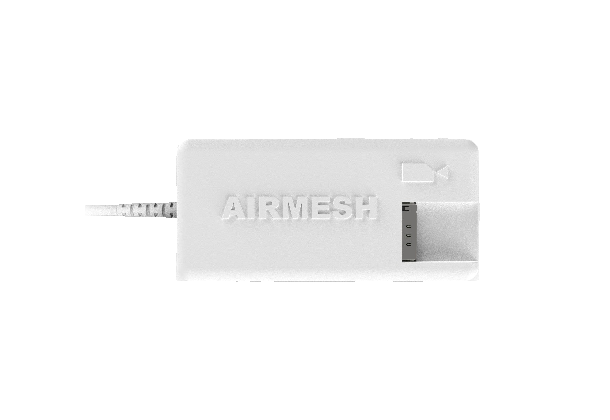

Flight Control Configuration
Setup Flight Controller Serial Port:
Telemetry-Port1 Setup:
Connect your flight controller to the PC via a USB cable.
Open Mission Planner and connect the flight controller to Mission Planner.
- Navigate to the Full Parameter List and search for the following parameters (x = 0, 1, 2, 3 depending on the port used):
SERIALx_BAUD = 57 (which means 57600 baud rate).
SERIALx_PROTOCOL = 2 (which means MAVLink2 protocol).
The value of x depends on your telemetry port. If you are using Telemetry-Port1, set: - SERIAL1_BAUD = 57 (57600 baud rate). - SERIAL1_PROTOCOL = 2 (MAVLink2 protocol).
These values are for standard reference and should match the settings in the Airmesh flight control interface.
Note down the values of SERIALx_BAUD and SERIALx_PROTOCOL. Use these values in the Flight Control interface of Airmesh.
Write the parameters to the flight controller and perform a power reboot.
Power on the entire system and wait for the Airmesh Wi-Fi to become available.
Connect to Airmesh Wi-Fi:
- Ensure your PC or device connects to the Airmesh Wi-Fi network:
Wi-Fi Name: Airmesh
Password: Airmesh123
QR Code: Scan the QR code below to connect:

Access the Flight Control Interface:
Open your web browser and navigate to the following IP address: - http://10.0.2.100:3000/
Click Flight Controllers on the left-hand side of the page.
The interface should appear as shown in the image below:

Follow the Video Instructions:
Refer to the video tutorial below for detailed guidance on completing the setup:
{kind=link}